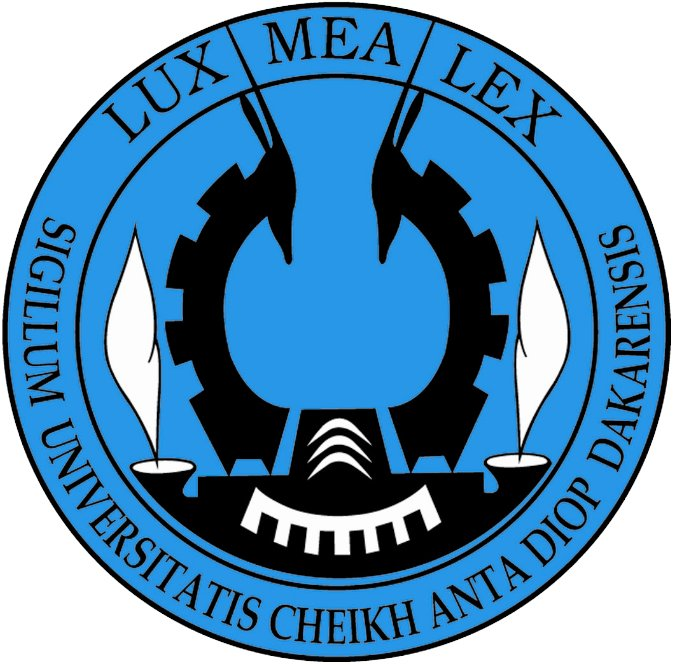

Formation académique
Mon parcours scolaire
Double formation d'ingénieur — entre rigueur statistique ouest-africaine et data science française — avec une spécialisation en modélisation économique et santé.
Spécialisation Modélisation Économique & Santé. Formation pluridisciplinaire alliant méthodes d'évaluation des politiques publiques, économétrie avancée et machine learning appliqué.
Formation d'excellence en statistique et économie appliquée. Maîtrise de l'économétrie avancée, de l'analyse des politiques économiques et des données publiques. Initiation au machine learning et aux big data.

Fondamentaux de la statistique, des probabilités et de l'analyse financière. Socle solide pour les formations d'ingénieur qui ont suivi.
Cérémonie de remise des diplômes — ENSAI, Rennes 2025